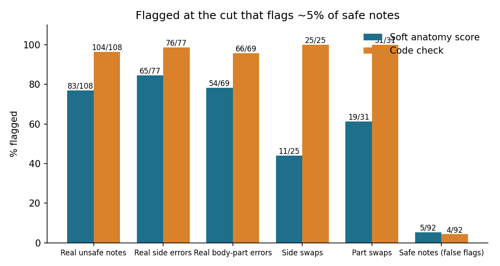

Paper follow-up · Clinical AI · Evaluation
A medical similarity metric scores "left knee" closer to "right knee" than "lumbar spine" to "lower back"
RaTEScore is a newer way to grade AI-written medical reports, built on matching medical terms by meaning. I tested whether that kind of matching notices the error my Roman Urdu notes make most: the wrong side.
By Muzammal Hussain · 4 November 2026 · 4 min read
Word-overlap scores such as BLEU and ROUGE count shared words, so they miss a note that uses different words for the same thing. RaTEScore (Zhao et al., 2024) takes the medical terms out of a report, turns each one into a vector with a medical encoder called BioLORD-2023-C, and matches every term with its closest term in the reference. It agreed with radiologists better than BLEU, ROUGE-L, BERTScore and RadGraph F1 in the paper's tests. The paper does not discuss left and right. In my last experiment a wrong or missing injured side was the most common error in notes from Roman Urdu consultations, so I wanted to know whether meaning-based matching sees it.
Key findings
- To the encoder, a wrong side is almost a synonym. "Right knee" vs "left knee" scored 0.77, the same as "right knee" vs "right patella" (0.77) and higher than "lower back" vs "lumbar spine" (0.60).
- When I swapped only left and right in 25 safe notes, the soft score flagged 11. A plain code check flagged all 25.
- On the 200 real notes the soft score looked good (AUROC 0.955), mainly because many unsafe notes also lost or changed a whole body part. It still passed a real note that said left elbow for a right elbow, with a score of 0.92.
- Its 5 false flags came from short but safe notes that left out other body parts mentioned in the consultation, not from synonyms.
What I did
This is a RaTEScore-style score, not RaTEScore itself. I used the same encoder and the same matching (each term matched to its closest term, then the average of both directions), but without the paper's term extractor model or its learned weights, and only for anatomy. Body parts and sides ("right ankle", "lower back") were read with the English and Roman Urdu word lists from my side check. No language model was called.
- Probe: the encoder's similarity for ten fixed pairs: side swaps, body-part swaps, synonyms and an unrelated pair.
- Real notes: the same 200 notes as before (40 English, 160 from Roman Urdu consultations, qwen2.5:3b and llama3.1:8b), scored against the English consultation.
- Swaps: every safe English note with left and right swapped, and with its main body part swapped (knee to ankle, shoulder to elbow, back to neck). The error is known by construction.
A note was flagged when its soft score fell below the cut that flags about 5% of safe notes (0.797). The code check flags a note when its side words or body parts disagree with the consultation.
Results
| Pair | Kind | Similarity |
|---|---|---|
| right knee / left knee | side swap | 0.770 |
| right ankle / left ankle | side swap | 0.748 |
| left shoulder / right shoulder | side swap | 0.717 |
| right knee / right patella | synonym | 0.767 |
| lower back / lumbar spine | synonym | 0.596 |
| right ankle / right knee | body-part swap | 0.504 |
| knee / headache | unrelated | 0.268 |

| Set | Notes | Soft score flagged | Code check flagged |
|---|---|---|---|
| Real unsafe notes | 108 | 83 | 104 |
| Side swaps | 25 | 11 | 25 |
| Body-part swaps | 31 | 19 | 31 |
| Safe notes (false flags) | 92 | 5 | 4 |
Swapping only the sides lowered the soft score by 0.17 on average, and swapping the body part by 0.27. The code check flagging every swap is expected, because the swaps were made with the same word lists it reads.
What this means
Meaning-based matching is a real step up from counting words, and it does catch notes that drop or change a whole body part. But the encoder places "left knee" and "right knee" in almost the same spot, so a score built on it can pass a note with the wrong side. For a physiotherapist that is the error that matters most. For MeetPhysio, the clinical documentation system I am building, I would keep the code check as the gate for side and body part and use a soft score only as a second signal, for example to rank notes for review.
Limitations
This is not the full RaTEScore: no term extractor model, no learned weights, anatomy only, so the full metric could rank notes differently. The notes come from 20 consultations I wrote, two models and one run each. The reference label uses the same word lists as the code check, which gives the code check an advantage on the real notes; the swap test does not have this problem. BioLORD-2023-C loads with mean pooling, which its owner describes as the correct behaviour.
What I will test next
- The full RaTEScore on the same notes and swaps.
- A side-aware match: compare body parts by meaning, but sides by rule.
- The checks on new consultations and speech-to-text transcripts.
Follows: Zhao W., Wu C., Zhang X., Zhang Y., Wang Y., Xie W. (2024). RaTEScore: A Metric for Radiology Report Generation. arXiv. arXiv:2406.16845